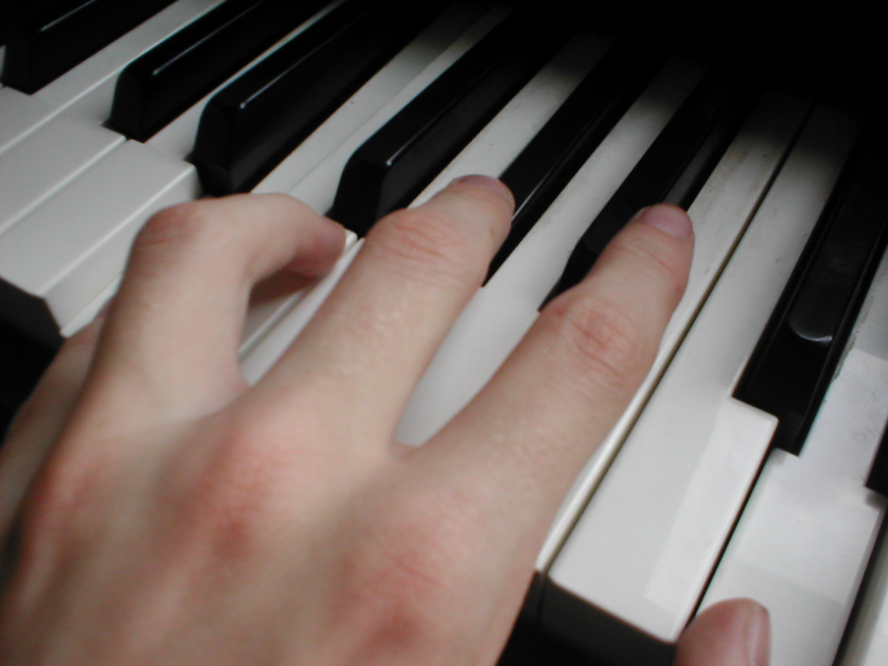

Basic music theory defines the elements that form harmony, melody, and rhythm. It identifies compositional
elements such as song form, tempo, notes, chords, key signatures, intervals, scales, and more. It also
recognizes musical qualities such as pitch, tone, timbre, texture, dynamics, and others. more info
In this guide we will be focusing on teaching you the basics of the following musical elements.
Chords
Chords are the harmonious building blocks of music. They evoke emotion and provide the foundation for
creating melodies. A chord is a combination of two or more notes played at the same time. They're built
off a single starting note called the root. There are four main types of chords in music, minor, major,
diminished and augmented. The purpose of chords and chord progressions is to compliment and support the
melody of a piece of music.
Minor chords are mainly associated with sad music, major chords with happy music, diminished chords with tense,
dramatic music and augmented chords with unsettling and mysterious music. more info

Scales and Keys
Musical scales form the building blocks of music. Understanding musical scales and their functions is essential
when learning basic music theory. There are two main types of scales, major and minor.
Keys and Their Scales
Key
Minor Scale
Major Scale
C
C Minor
C Major
C#/Db
C# Minor
Db Major
D
D Minor
D Major
D#/Eb
D# Minor
Eb Major
E
E Minor
E Major
F
F Minor
F Major
F#/Gb
F Minor
Gb Major
G
G Minor
G Major
G#/Ab
G# Minor
Ab Major
A
A Minor
A Major
A#/Bb
A# Minor
Bb Major
B
B Minor
B Major
A music scale is a set of notes within an octave arranged by their pitch. The ascending or descending interval
relationships among the note pitches define each scale. Moreover, the notes from a scale form melodies and harmonies.
Natural minor scales sound dark, sad, and emotional, while natural major scales sound bright, uplifting, and happy.
more info
Melodies
Melody is a succession of notes or voices arranged into a musical phrase. A song's melody is often the most memorable
and recognizable part.
Melodies can be created with instruments or vocals. They have two or more notes in a sequence that sound musically
pleasing. Most compositions consist of multiple melodies that repeat.
The two primary elements of a melody are pitch and rhythm:
Pitch is the audio vibration produced by an instrument or voice. It's how high or low a note will sound. Arranging
these pitches in a series creates a melody.
Rhythm or duration is the length each pitch will sound. These durations are divided into beat divisions like whole
notes, half notes, quarter notes, triplets, etc. more info
Harmony
Harmony is when multiple notes or voices play simultaneously to produce a new sound. The combined sounds in harmonies
complement one another and sound pleasing.
Chords and chord progressions are examples of harmony. A chord has three or more notes that play at the same time.
The chords and chord progressions in a piece of music support or complement the melody.
Combining vocal parts also creates harmony. The combined voices of a choir are a perfect example. The multiple
voices that make up a choir blend to make a harmonious sound. more info